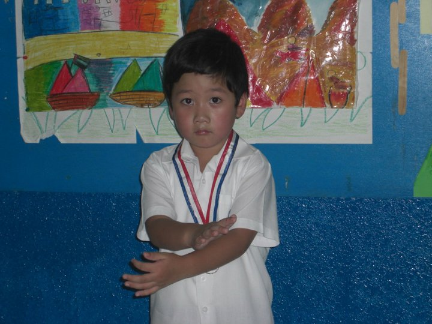

Learn more about my life, my journey into BSITCST, my personality, and my hobbies.
My name is Adrian Rovic A. Corrales
I'm an 18-year-old student at FEU Institute of Technology, currently pursuing a Bachelor of Science in Information Technology with a specialization in Cybersecurity.

Kindergarten (2010–2012)
I studied kindergarten in Far Eastern Private School, where I learned the basics of reading and writing.
Elementary (2012–2018)
Still in Far Eastern Private School, I gained knowledge in history, science, math, etc. I also learned how to play basketball, which is one of my favorite sports.